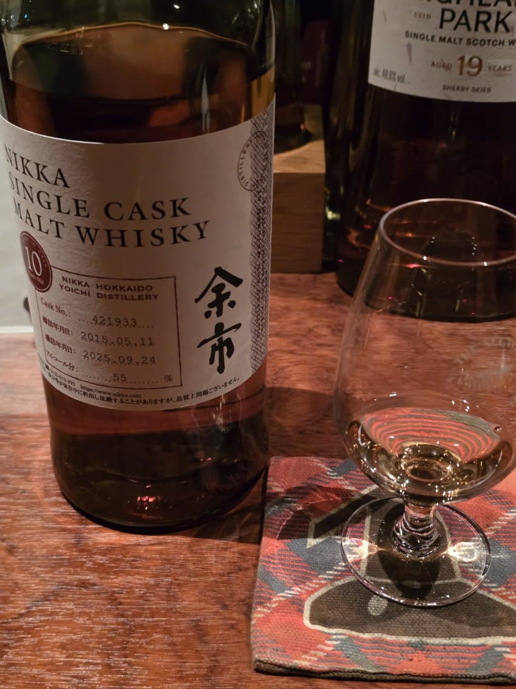
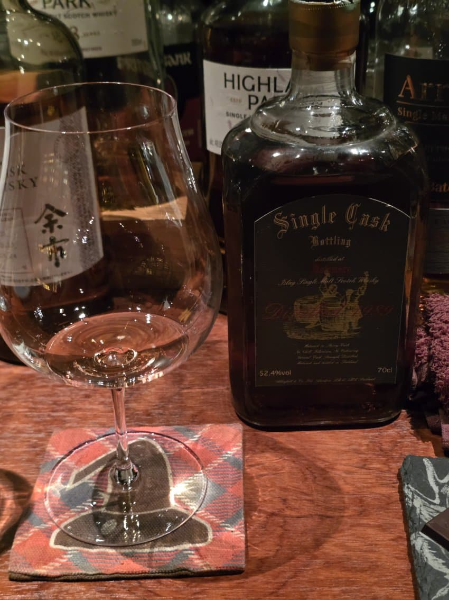

주라갤 타이탄햄 추천으로 갔다옴
원래 유명한 곳인건 알고 잇엇음

요이치 싱캐
N 신문지, 옅은 가죽, 청사과, 꿀, 핵과류
P 약간 맵다, 향긋한 플로럴이 팡 터지고 이어서 시트러스가 좋다. 옅고 향긋한 과실, 한모금 마시고 난 이후에는 몰티와 꿀같은 단맛
F 약간의 스모키, 청사과, 프루티, 은은한 피트
90점

보모어 싱캐 1989
N 스파이스, 녹진한 셰리, 적당한 탄닌과 초콜릿, 옅은 시트러스
P 보모어 특유의 연한 다시마, 탄닌,약간의 신문지, 스파이스, 포도의 단맛
F 우디, 다크초콜릿, 한약..?
89점

하이랜드파크 1973 (드래곤팍)
N 플로럴, 꿀, 약간의 시트러스, 거슬리지 않는 스파이스,
P 강렬한 붉은 과실, 단맛, 탄닌, 시트러스의 힌트와 함께 착즙베리 주스
F 쥬스에서 슬쩍 이어지면서 스모키, 가죽과 신문지 겉은 피트
92점
아란 29년 일본 싱캐 리필셰리
N 약간의 비릿한 냄새, 옅은 과실, 청포도? 화이트와인 같은 느낌도 있다. 좀 더 맡으니 달달한 몰티와 꿀
P 사과 캔디, 청포도 캔디, 강렬한 달달함과 시트러스가 좋다. 약간의 풀맛(grassy), 몰티
F 약간의 우디와 풀맛, 미세한 텁텁함, 과실의 여운
91점
습하 한번해주고..
여기서 하이볼은 묵지마라 비싸네.. 요이치 하프랑 700밖에 차이 안남;
댓글 12개